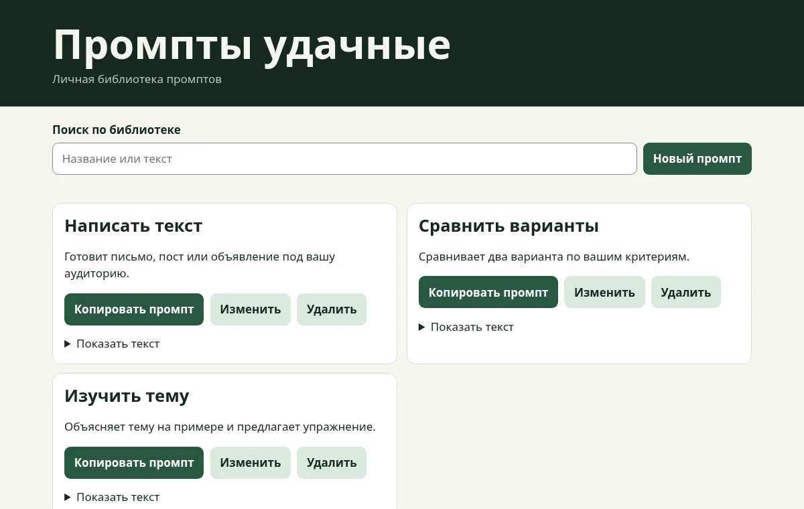

Библиотека под рукой
На карточке видно название и короткое описание. Поиск помогает найти нужный шаблон, а кнопка «Копировать промпт» переносит полный текст в буфер обмена.

Первый запуск
- Откройте библиотеку в современном браузере.
- Выберите готовую карточку или добавьте свой промпт с названием, описанием и текстом.
- Нажмите «Копировать промпт» и вставьте текст в нужную ветку.
Данные хранятся в браузере или на устройстве. Библиотеки на разных устройствах хранятся отдельно.
Версии
Предварительная браузерная версия. Для Android готовится тестовая сборка для Android 8.0 и новее со свежим Android System WebView.